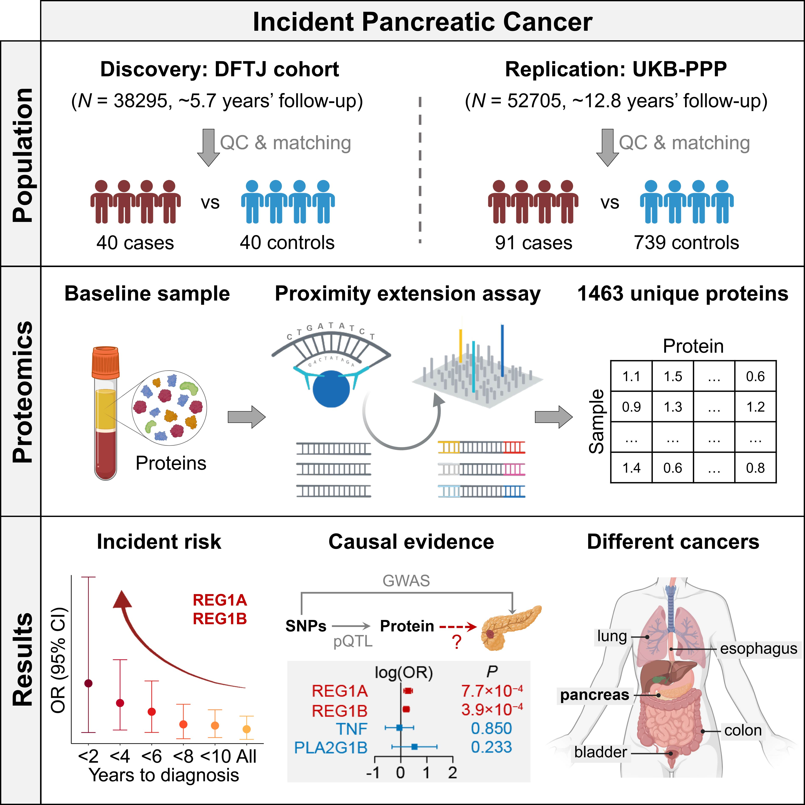
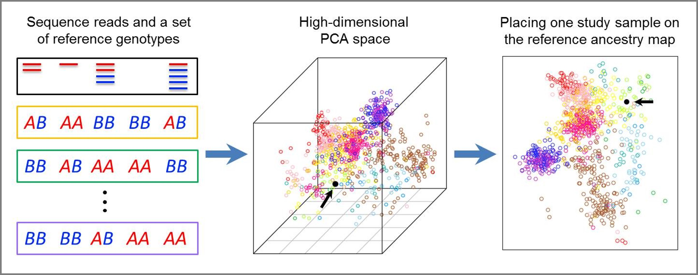
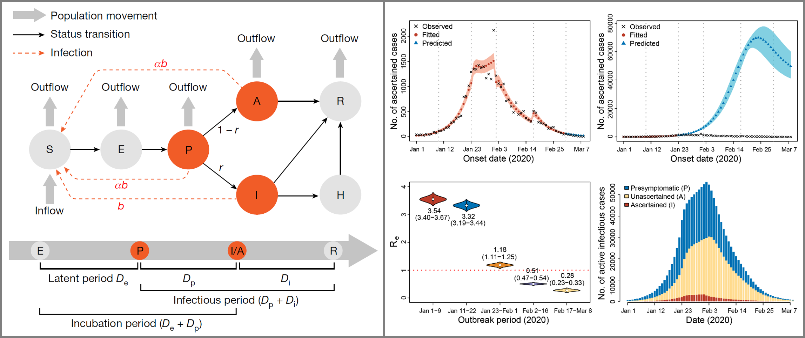

Statistical And Population Genetics
Medical Genomics

About the lab
We are a bioinformatics team in the Tongji School of Public Health, Huazhong University of Science and Technology in Wuhan, China. We study statistical genetics and genomics, population genetics, epidemiology, and biostatistics.
Currently, our research focuses on: (1) identifying major risk factors of complex diseases in the Chinese population; (2) understanding how the exposure of major risk factors can trigger the "omics cascade" and eventually lead to the disease development; (3) improving disease risk prediction models to facilitate precision prevention programs in China. To achineve these goals, we combine conventional epidemiological studies and integrative genomics approaches, leveraging large-scale genomic, epigenomic, proteomic, and metabolomic data from our in-house population cohorts and public databases. We also develop novel statistical and computational tools to address challenges arise from large-scale population genomic data.
Below are some graphical highlights of our research:
Graphical abstract of our paper on whole-genome sequencing study of 4,810 Chinese, Malays, and Indians in Singapore (Wu et al. 2019, Cell). Because of Singapore's unique immigration history, this study provides a snapshot of the genetic diversity across East, Southeast, and South Asia, and unravels insights into the population structure, demographic history, and natural selection of Asian populations. This paper was featured as a Cover Article by Cell. |
|  | Graphical abstract of our paper on serum and plasma proteomic study of incident pancreatic cancer. (Lyu et al. 2024, Cell Genomics). We identified circulating REG1A and REG1B proteins to associate with the incident risk of pancreatic cancer in two prospective cohorts from China and the UK. With additional causal evidence from Mendelian randomization, this study highlights REG1A and REG1B as promising biomarkers and potential therapeutic targets for pancreatic cancer. |
Graphical abstract of our paper on the association between mitochondrial DNA copy number (mtDNA-CN) and the prognosis of stroke patients in China. (Cheng et al. 2024, Stroke). Based on a prospective cohort of 10,241 patients with ischemic stroke or transient ischemic attack, we found lower mtDNA-CN is associated with higher stroke recurrence rate and all-cause mortality, as well as poorer functional outcome at follow-up, among stroke of undetermined cause, embolic stroke of undetermined source, and younger patients. |
|  Graphical illustration of the LASER method, which provides a unified statistical framework to estimate an individual's genetic background in a reference ancestry space using either ultra-shallow sequencing data or sparse genotyping data. (Wang et al. 2014, Nature Genetics; Wang et al. 2015, AJHG) |
|  Graphical illustration of our modelling study to reconstruct the full transmission dynamics of COVID-19 in Wuhan (Hao et al. 2020, Nature). We extended the conventional SEIR model to a SAPHIRE model, incorporating asymtomatic cases and presymtomatic transmission of COVID-19. This study reveals two key features of SARS-CoV-2: high transmissibility and high covertness. While infectious disease is not our main research focus, there is a story behind the paper. |